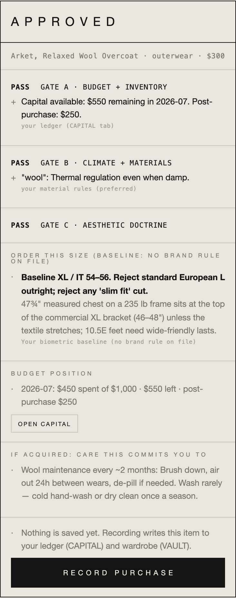
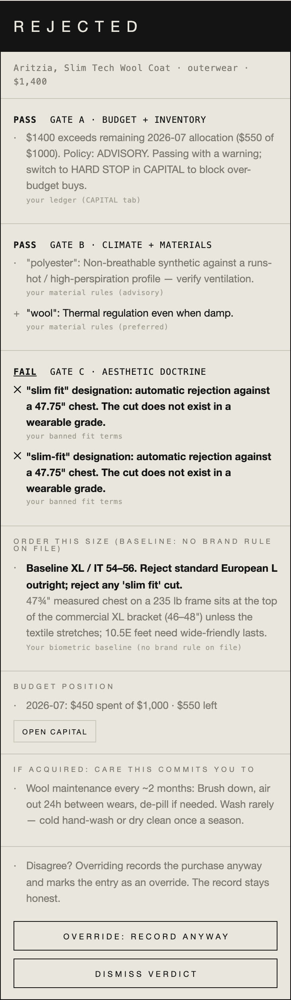
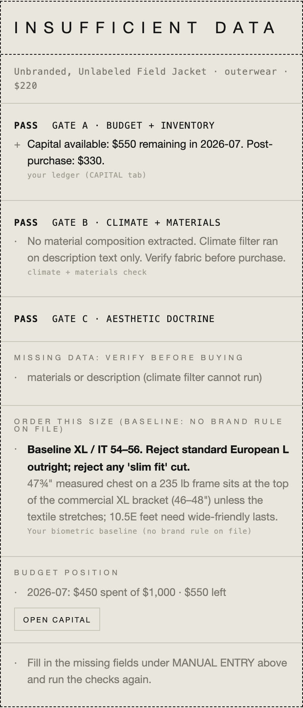

Four LLM failure modes, fixed in code.monolith
A deterministic wardrobe architect and budget controller, promoted from a prompt configuration to a product. The design bet: sycophancy, hallucination, context degradation, and agentic drift are architecture problems, not prompt problems. So the LLM only does perception, three deterministic code gates issue every verdict, unknown data returns INSUFFICIENT_DATA instead of a guess, and an append-only log keeps the whole decision path inspectable. Mobile-first PWA, TypeScript end to end. The instinct is editorial, straight from the newsroom: when the data is not good enough, the answer is not published.
read the narration
I'm Mitchell Williams. monolith fixes four LLM failure modes in code: sycophancy, hallucination, context degradation, and agentic drift. My bet, those are architecture problems, not prompt problems. So the model only does perception, turning a product page into structured fields. Three deterministic code gates, a state audit, a climate filter, an aesthetic gate, issue every verdict, and none can be argued with the way a prompt can. When the data isn't good enough, the system returns insufficient data instead of a guess. Every decision appends to an audit log, so the whole path stays inspectable. It's a mobile-first PWA, TypeScript end to end, built around a wardrobe architect and budget controller. Paste a product URL, you get a verdict: approve, reject, or insufficient data, with the budget position, climate rules, and doctrine that produced it. The instinct is straight from the newsroom: when the data isn't good enough, you don't publish the answer.
Paste a product URL, get a verdict: APPROVE, REJECT, or INSUFFICIENT_DATA, with the budget position, climate rules, and aesthetic doctrine that produced it. The domain is a wardrobe; the architecture is the point.
The LLM is confined to perception. Its only job: turning a product page into structured fields through schema-enforced structured outputs. It never approves, never rejects, never reasons about budget. "Unknown" is a legal value in the schema, and downstream it produces INSUFFICIENT_DATA, never a filled-in guess. Every numeric claim in a verdict cites the source file it came from.
Three gates, all of them run. Gate A audits state: budget position, campaign windows, inventory clashes. Gate B filters climate: material rules against a live weather forecast. Gate C enforces aesthetics: doctrine, banned brands, banned fit terms. There is no short-circuit; a rejection reports every violation at once, so one verdict tells you everything that is wrong instead of one thing per attempt.
There is no middle to get lost in. The server is stateless per request and re-reads profile constraints from disk on every call, so context cannot degrade. There is no multi-turn agent, so there is nothing to drift: each verdict is a fresh, complete evaluation. And every verdict appends to an audit log, so the decision history is a file you can read, not a chat you have to scroll.
A real product around the architecture. Five surfaces: paste-a-URL verdicts, a per-brand sizing matrix, wardrobe inventory with cost-per-wear, a budget ledger with hard-stop and advisory policies, and weather-triggered care alerts for rain-sensitive assets. Profiles are pure data. A second user onboards by adding a profile, zero code changes.
The same three gates, three different outcomes. Every card is a real verdict from the app, each one citing the rule and the source that produced it.



Screenshots from the running PWA, 2026-07-10.
verdicts.jsonl, so the decision path stays inspectable forever.The domain is deliberately small; the architecture is not. Put judgment in deterministic code, keep the model at the perception edge, make "unknown" a first-class outcome, and log every decision: that is the same shape as any serious LLM system that has to be trusted with real constraints and real money. monolith is that pattern at personal scale, complete enough to live on a phone's home screen and honest enough to say INSUFFICIENT_DATA when it doesn't know.
A validator cannot be talked into an exception. That single sentence is the whole architecture, and the reason the four failure modes stay fixed.
The gates, the schema, and the 50-test suite are public at github.com/mitwilli-create/monolith.